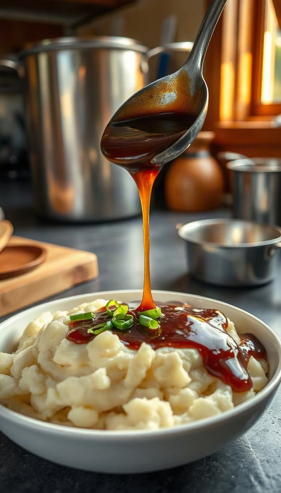
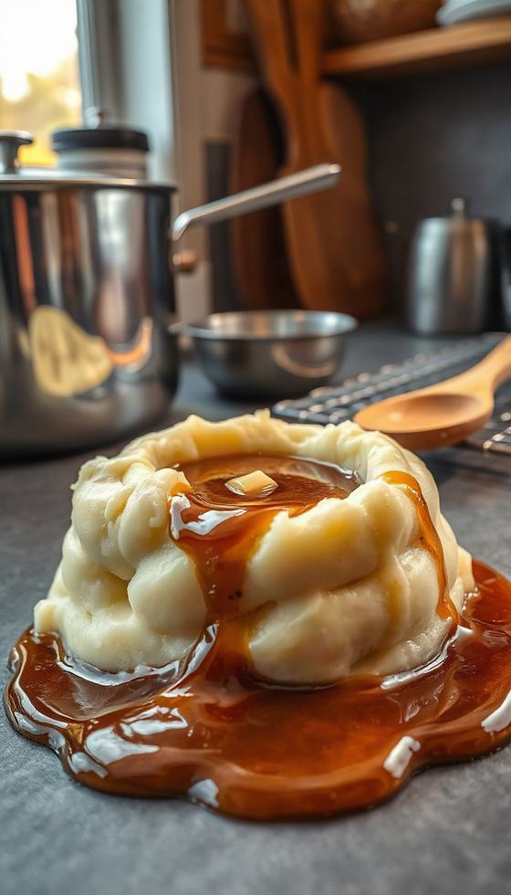
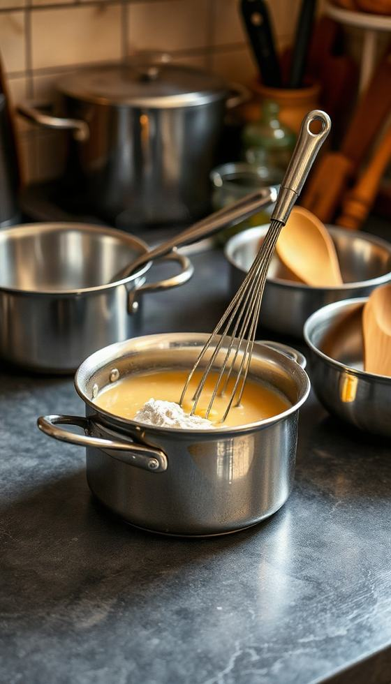
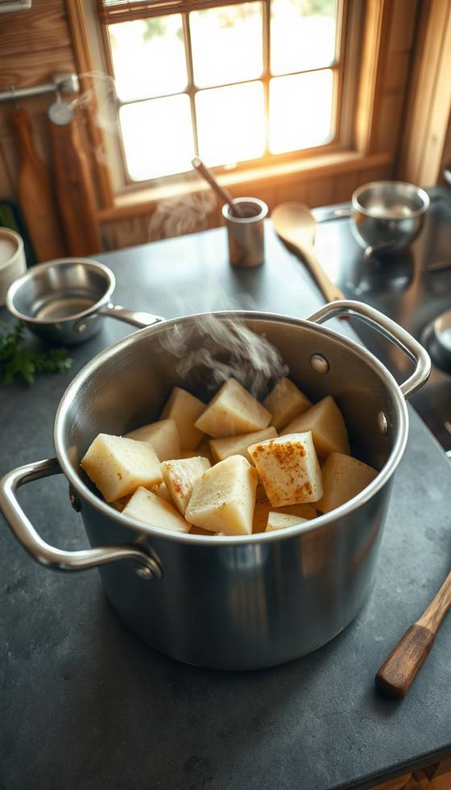
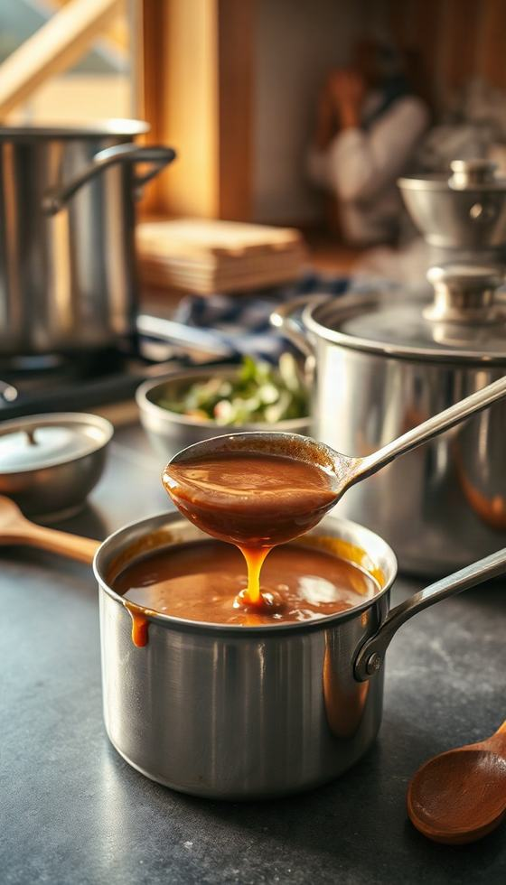

Budget Bite Club
Budget Bite ClubSteakhouse-Style Garlic Mashed Potatoes & Gravy ($5 vs $50 Steakhouse Sides)
About $3.70* · 4 servings · 20 min
*Prices are estimates and may differ from what you pay. How we price recipes
Steakhouse garlic mashed potatoes with gravy, $0.93 a serving instead of about $13 a side.





Ingredients
- 1 kg potatoes (Yukon gold or russet), peeled and cut into 2 cm chunks
- 6 garlic cloves, peeled and lightly smashed
- 1 tbsp salt (for the cooking water)
- 2 tbsp butter (for the gravy)
- 2 tbsp all-purpose flour
- 1 beef bouillon cube dissolved in 1 1/2 cups boiling water
- 1 tsp soy sauce
- 1/4 tsp black pepper, plus more to taste
- 4 tbsp butter (for the mash)
- 1/2 cup 35% cream
- 2 green onions, thinly sliced
Steps
- Boil a full kettle (about 4 minutes). Put the 2 cm potato chunks and smashed garlic in a large pot, pour in boiling water to cover by 2 cm, add 1 tbsp salt, cover, and bring back to a boil over high heat.
- Uncover, reduce to a steady simmer, and cook 10-12 minutes, until a fork slides through a chunk with no resistance.
- While the potatoes cook, make the gravy in a small saucepan over medium heat. Melt 2 tbsp butter, whisk in 2 tbsp flour, and cook 1-2 minutes until it smells nutty and turns light tan.
- Slowly whisk the hot bouillon (1 cube in 1 1/2 cups kettle water) into the roux, then add 1 tsp soy sauce and 1/4 tsp pepper. Simmer 4-5 minutes, whisking, until it coats a spoon. Turn the heat to low. Don't add salt, because the bouillon brings plenty.
- Drain the potatoes and garlic well. Return them to the hot, empty pot over low heat for 1 minute, shaking, to steam off excess water.
- Add 4 tbsp butter and the cream to the pot. Mash with a masher until smooth, mashing the soft garlic cloves in with the potatoes. Taste and adjust salt and pepper.
- Spoon the mash into bowls, make a well in each, pour in the hot gravy, and top with green onions. Serve right away.
What you'll need
Gear links go to Amazon (Amazon.ca, or Amazon.com in the US). As an Amazon Associate I earn from qualifying purchases, at no extra cost to you.
Watch the videoMore $5 recipes
About the prices: they're estimates, not quotes. Since Nov 2026 they're based on Statistics Canada's monthly average retail prices where an item is listed (Open Government Licence - Canada), otherwise on typical Canadian grocery prices, and count only the amount of each ingredient used, not whole packages. What you pay will vary by store, location, brand, sales, taxes and date, and any pantry staples you need to buy will add to it. Recipe visuals and narration are AI-generated.